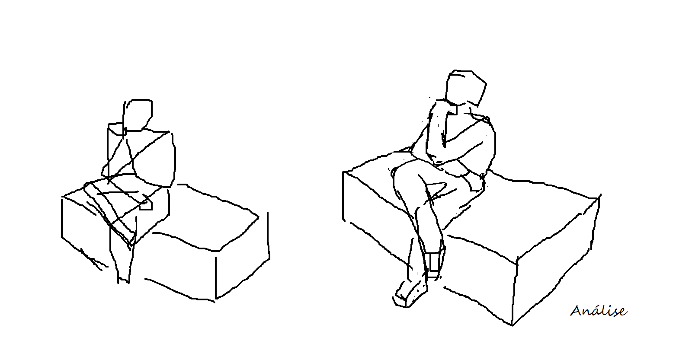
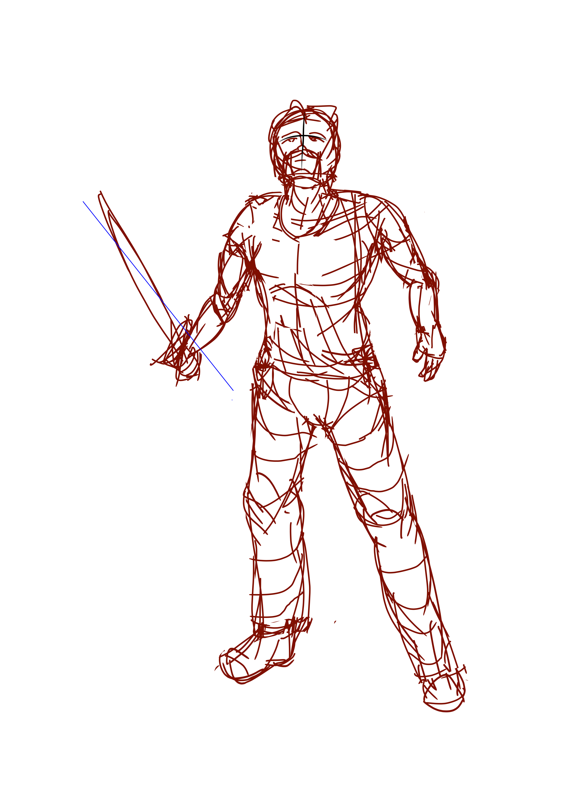
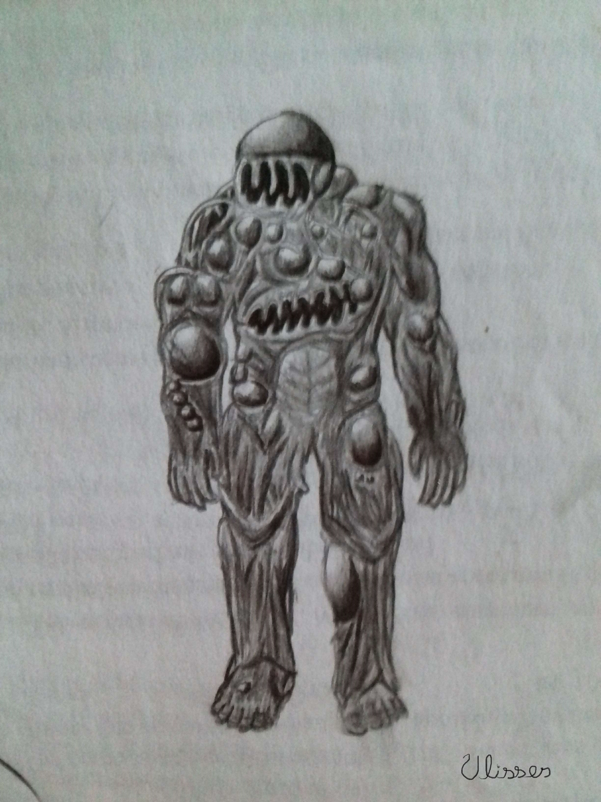

Se você desenha ou tem interesse em aprender provavelmente já se esforçou para fazer um super mega desenho e ele não saiu assim tão bem. O que então faz com que várias pessoas, os desenhistas profissionais, consigam diariamente desenhar com qualidade? Com certeza não desenham e apagam trilhares de vezes o mesmo desenho até ficar bom. Em vez disso eles têm um processo, um conjunto de etapas, um algoritmo, que permite que treinem e aprendam em cada desenho. Eles desenham coisas que nunca desenharam antes de forma semelhante às coisas que já desenharam.
Isso mesmo, existe uma receita para desenhar bonito. Mas a diferença é que não é só misturar coisas e esperar ficar pronto, em vez disso, você aprende a simplificar e detalhar o que quer desenhar.
Para desenhar bem, basta:
A lógica é: você tem de parar e obsevar o que vai desenhar, até mesmo coisas semelhantes quando vai desenhar algo imaginário. Não só olhar, como se fazer perguntas, por exemplo, ao se desenhar uma pessoa deve-se parar para pensar quão grandes são as pernas em relação ao todo, em que pose está, qual parte sustenta o peso (para não passar a impressão que está flutuando), para onde apontam os joelhos e cotovelos, qual sua expressão, etc.
Eu cometia muito o erro, por exemplo, de ao desenhar algo ignorar o algumas partes e então o desenho ficava sem espaço para continuar, ou desenhava árvores sem perceber que as folhas ocupam muito mais espaço que o tronco.
Duas imagens que ilustram eu tentando entender como se desenha um guaxinim:
Como todos sabemos, a mente humana é incrível porém limitada, se não fosse poderiamos prever perfeitamente todos os próximos momentos do universo. Sendo assim, precisamos de alguma forma de resumir o que vemos em sentenças a serem trabalhadas mentalmente em busca de deduções e dúvidas. Ao simplificar algo para desenhar, você está literamente conhecendo mais desse algo.
Simplificando, podemos separar etapas a serem seguidas e nos lembrarmos delas. Em vez de só criar contornos e pensar se tem de riscar mais para a direita ou esquerda, deixamos isso para a parte inconsiente do cérebro, a mesma usada para andar sem ter que pensar em cada passo.
Nessa parte você, ehh... define os detalhes de perspectiva. Você pode clicar aqui para ir para a página sobre perspectiva. Nessa etapa é possível escolher detalhes marcantes, como direcionar a atenção de quem vê e passar a ideia de profundidade, mas isso se adquire principalmente vendo outros desenhos e não cabe citar todas as possibilidades.
A dica que eu posso deixar é: não espere que adicionar depois um cenário com perspectiva em algo claramente sem perspectiva vá ficar bom. Pelo menos para mim, o resultado sempre pareceu ruim
Bastam formas semelhantes a cubos, cilindros e esferas para esboçar qualquer coisa. Se você simplificou certo, ao desenhar uma pessoa, por exemplo, é de se esperar que não desenhe nada relativo aos olhos ou nariz até esboçar a cabeça. As vantagens desse processo são:
Quanto a essa última, pode parecer que se está ganhando tempo pulando o esboço, mas além de ter de refazer mais partes, gastas-se mais tempo, a longo prazo, não aprendendo a simplificar.
Agora sim é hora de adicionar detalhes como os músculos, que individualmente não ocupam tanto espaço e variam conforme os as formas básicas da etapa anterior.
O que você adiciona vai depender muito de já ter visto e prestado atenção. Quando é um desenho imaginativo, vale a pena sair vendo imagens e adicionando pequenas coisa delas (sem plágio é claro, só inspiração)
Dessa parte eu não tenho muito o que falar. É simples, embora demore.
Aqui há um exemplo, o personagem Steve de Minecraft que eu redesenhei:
Só depois de prestar atenção, resumir, agregar formas e traçar linhas por cima, éque se tem a noção de onde e como está todas as coisas, sem risco de ter que apagar uma parte porque ela não ficou legal. Claro que hoje em dia, qualquer um que desenhe em meio digital pode arrastar e distorcer partes do desenho para desfazer erros, mas ainda sim você vai querer deixar o acabamento para o final.
E com acabamento eu quero dizer luz e sobra suaves, efeitos de textura e detalhes tão pequenos como a repartição de pontas em cabelo.
Essa é minha parte preferida, e no geral é bem menos trabalhosa.
